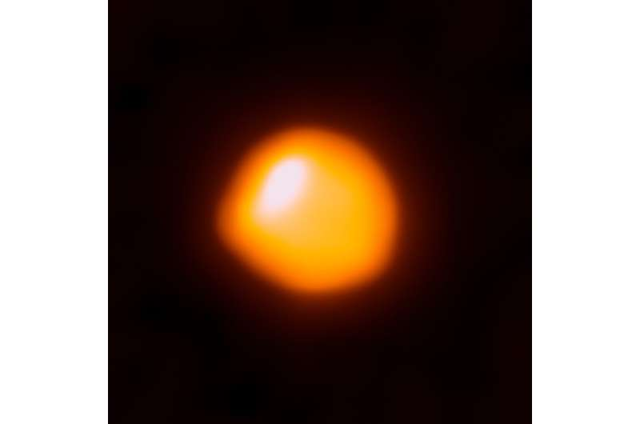

Trekëndëshi Veror i Qiellit
Kjo javë është një kohë e shkëlqyer për të parë Trekëndëshin Veror, një nga asterizmat më të njohur në qiellin verior:

Shpërthimi më i ndritshëm kozmik i të gjitha kohërave
Ne e dimë se ato mund të lëshojnë aq energji në rrezet gama sa Dielli gjatë gjithë jetës së tij.

Betelgeuse është pothuajse 50% më e ndritshme se normalja.
Sa herë që ndodh diçka me Betelgeuse, spekulimet për shpërthimin e saj si një supernova shtohen. Do të ishte mirë nëse do të ndodhte.

Jo shpërthimi juaj mesatar i hapësirës
Ndërsa studionte novaet klasike duke përdorur vargun bazë shumë të gjatë të Observatorit Kombëtar të Astronomisë së Radios (VLBA), një studiues i diplomuar zbuloi

Interceptohen tetë sinjale të reja nga hapësira: A janë jashtëtokësorë?
Interceptohen tetë sinjale të reja nga hapësira: A janë jashtëtokësorë?Interceptohen tetë sinjale të reja nga hapësira: